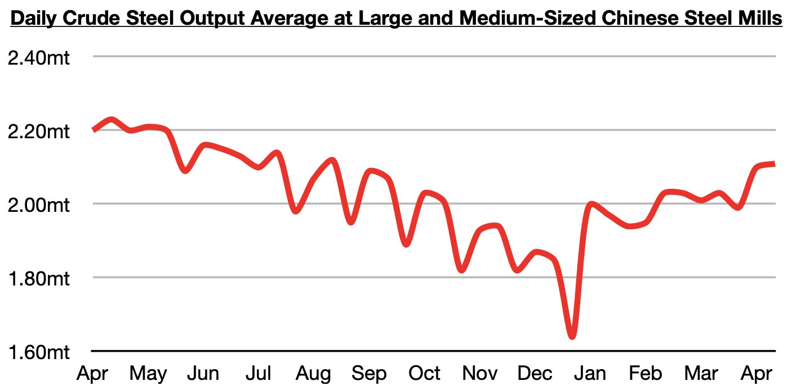

As we discussed in Commodore Research's most recent Weekly China Report, steel production at large and medium-sized mills in China most recently averaged 2.11 million tons during April 11 - April 20. This is up by 1% from early April but is down year-on-year by 5%. Compared to December’s recent low of 1.64 million tons, this most recent level is up by 29%, but nevertheless production is still down on a year-on-year basis.

Remaining very significant is while that China's steel production has remained in a year-on-year contraction since September, China's iron ore imports have stayed strong as we have been predicting. China's iron ore imports have grown year-on-year during each of the last ten months. As we have continued to stress in our Weekly China Reports and Weekly Executive Reports,it is global iron ore production that drives China's iron ore import volume, and not steel production or even iron ore port stockpiles.We remain bullish for China's iron ore import prospects.